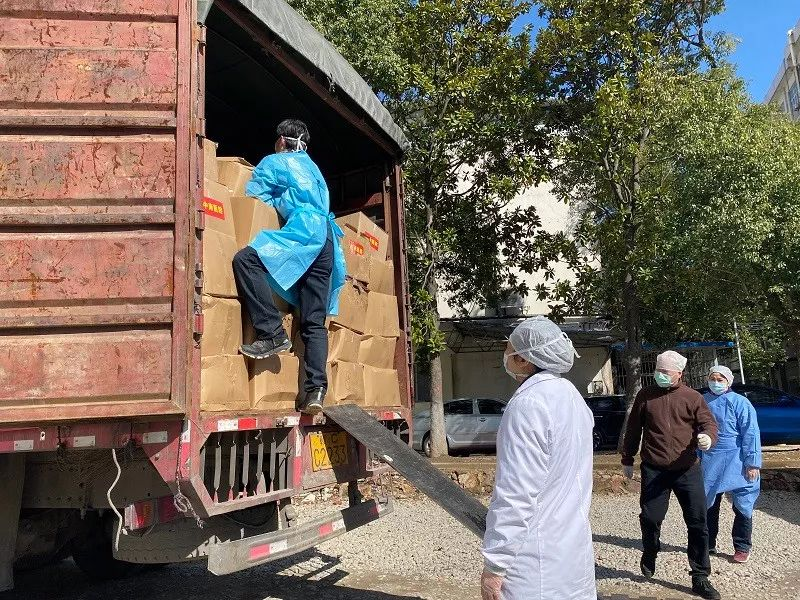

制造业复工，打开物流通道是关键
原文链接 备份链接 _ 各地的隔离措施在阻断疫情传播人流的同时，也阻断了货运物流，这成了许多制造企业复工的难题；此外，防控措施和复工审批进程也给复工前景增添了变数 _ 文 |《财经》记者 韩舒淋 编辑 | 余乐 疫情之下，科技公司还能借助 …

人员返岗难、道路不畅通、现金流紧绷，中小物流企业需要更多的支持和帮助，这不仅事关物流业全面复工复产，也关系到民生和社会稳定

文 |《财经》记者 王静仪
编辑 | 施智梁
快递员王为这几天已经忙昏了头，他所在的上海市浦东新区某网点只有一半员工按时返工，“太累了，一个人要送两个人的区域。”
距离快递公司2月10日全面复工已经过去了十多天，产能仍然难以爬坡。根据国家邮政局2月19日的统计，产能不足一半。
卡车的车轮跑起来，国民经济的供应链才能转起来。小件快递运输影响了居民的日常消费，大宗货运体系也制约了制造业复工。据全国道路货运车辆公共监管与服务平台数据，全国重型货运车辆节后开工形势不佳，正月十五前后行业开工率仅为往年的四分之一。
但是不少员工还困在老家，卡车在高速上处处碰壁，复工必备的口罩难寻，物流企业复工成本高企，现金流紧绷。
在紧张的防疫态势下，全国多地城市间的公共交通停运，一些村庄甚至全面“封村”，不少回家过年的员工不愿也不能返回工作所在地。返回之后，隔离14天的要求也加剧了用工难题。“我们需要把卡车司机从被窝里喊出来。”物流信息服务商路歌的CEO冯雷对《财经》记者说。
更重要的是，各地交通管制制约了物流行业的运转。《财经》记者从长久物流(603569.SH)副总裁张振鹏处了解到，截止2月20日中午12点，全国可顺畅通行的城市只占一半，多个城市禁止大车下高速或者情况时时变动。
天津乾海物流有限公司总经理蔺宜坤很忧心。“2月业绩大幅衰退，亏损是必然的。3月是否恢复、能恢复到何种程度都将直接影响企业的运转，甚至生存。但是现实是开源无门，以裁员、降薪的方式节流也不合适。如此一来，现金流就变得格外紧张。”
当平时习以为常的物流运输陷入停滞，国务院发展研究中心市场经济研究所所长王微评价道，保应急物资和日常必需品的畅通都是物流企业的任务，现在都感到交运和物流行业在国民经济中的巨大作用。
人员返岗不易
2月10日，这是中通快递(NYSE:ZTO)、申通快递(002468.SZ)、百世集团(NYSE:BEST)、韵达股份(002120.SZ)、德邦股份(603056.SH)等快递公司全面复工的日子。中国邮政、顺丰控股(002352.SZ)、京东物流和苏宁物流等春节期间为正常收派。
“一手抓疫情，一手抓复工”，国家邮政局于2月7日同各大快递企业召开专题电话会议提出要求：在2月10日实现绝大部分地区运营全面恢复；计划在本月中旬快递业生产要恢复到正常产能的4成以上；到本月下旬，根据疫情变化和形势发展，继续提高产能比重。
各大快递企业于当天紧急召开全网工作视频会议响应，2月10日，主要企业纷纷复工。“现在已经进入防疫的下一个阶段，重点要转入复产复工，为社会、为百姓提供服务。”《财经》记者从圆通速递(600233.SH)副总裁相峰处了解到。
名为全面复工，消费者的感受却不甚不同。在国家邮政局宣布复工消息的微博评论区内，清一色都是类似“我的快递已经在转运中心停了7天了”对低下效率的抱怨。
圆通速递相关人士告诉《财经》记者，全面复工意味着除了疫区和政府管控严格地区之外的所有网点正常运营，但目前只有80%员工返岗，业务量是正常状态的四成。
全面复工多日后，产能仍然难以爬坡。根据国家邮政局2月19日的统计，快递业的产能是平时的4成以上。2月17日，全国快件揽收量1.12亿件，达到正常业务量的6成，投递量超过8000万件，仅为正常业务量的4成多。
据全国道路货运车辆公共监管与服务平台数据分析显示，全国重型货运车辆节后开工形势不佳，正月十五前后行业开工率仅为往年的四分之一。其中，湖北车辆开工率不到往年的10%。2 月10日后车辆开工率持续回升，但是回升速度较为缓慢。
中通快递上海市浦东新区某网点的快递员王为这几天已经忙昏了头。他所在的网点只有一半员工按时返工，于是分摊到每个快递员身上的任务大大增多，“太累了，一个人要送两个人的区域。”
员工返岗难是快递企业要面临的头号难题。受疫情防控的影响，全国多地城市间的公共交通停运，一些村庄甚至全面“封村”，不少回家过年的员工不愿也不能返回工作所在地。
国家邮政局2019年发布的快递员生存现状调查报告显示，76.31%的快递员来自农村，15.89%的快递员来自县城，7.8%来自城市。“我们需要把卡车司机从被窝里喊出来。”物流信息服务商路歌的CEO冯雷对《财经》记者形象地说道。
即使回到工作所在地，隔离14天的要求也加剧了用工难题。目前北京市要求，所有返京人员抵京后需居家或集中观察14天。此前北京市曾通报一确诊病例，其从外地返京后未主动居家隔离14天即正常上班，导致单位数十人作为密切接触者被隔离。
“人员复工率不足，对于收派、转运都有影响。每年员工只有过年一次假期，以往节后返工对于快递企业来说都是困难和挑战，今年的挑战更是数量级的上升，直接导致效率降低、成本上升。”《财经》记者从相峰处了解到。
一些地方政府已经在积极行动，帮助企业解决复工荒。以浙江宁波市为例，当地物流协会应市政府要求，组织高铁专列，从安徽阜阳、四川成都、江西南昌和河南周口，免费运送企业员工直达宁波。
要想复工，得买口罩。作为劳动密集型行业，一家快递公司的城市转运中心就有上千名员工，对于口罩等防疫保障物资的需求极大，但是在全国防护物资采购难的大背景下，企业采购普遍受挫，“现在口罩已经是有价无市。而且各地标准不一，有的地方要准备十天的口罩，有的要准备一个月”，杭州松松供应链管理有限公司总经理高松对《财经》记者说。
道路待畅通，企业现金流紧绷
交通运输部、国家邮政局和中国邮政集团公司在2月8日联合印发紧急通知，要求“各高速公路、国省干线公路、农村公路不得非法禁止或限制邮政、快递车辆正常通行(包括始发或途经重点疫情地的邮政、快递运输车辆)，不得随意扣押邮件、快件、车辆及驾押人员。”
但在紧张的防疫态势下，各地道路难言畅通，交通管制仍是制约物流行业的重要因素。《财经》记者从主营整车物流的长久物流副总裁张振鹏处了解到，截止2月20日中午12点，全国限行的城市有68个，即不让大车下高速；162个城市不确定，情况时时变动；251个可进入。这意味着，全国可顺畅通行的城市只占一半。
不少卡车司机曾被交警要求在高速公路服务区上自我隔离。一周前，陕西司机杨冰满载一车口罩前往四川达州，尽管他不曾进入湖北疫区，也被要求在驾驶室内自我隔离四日，再进入达州市区。
一头是焦急的客户，一头是谨慎的基层执法者，物流企业进退两难，面临复工后效率低下的问题。“各地秉持守土有责的原则，跨省运输的驾驶员出去了再回来要隔离14天，虽然所有车都复工了，但是实际复工率非常低。”贵州丰茂运输有限公司副总经理李青桁告诉《财经》记者。
长三角区域对于道路运输的限制正在放开。2月16日，上海市交通委发布了“长三角疫情防控交通运输一体化货运车辆通行证”，即日起，符合防疫条件的企业和员工可以在输入相关信息后，获取电子版“货通证”，持证货运车辆在长三角可便捷通行，持证人员回沪无须再次隔离14天。
疫情期间，众多物流企业都在践行企业社会责任，进行免费运输；但后续如果无法开展正常的运输经营活动，司机就还不上车贷，企业也入不敷出。根据中国物流与采购联合会于2003年发布的《SARS对物流业影响的调查报告》统计，75%的物流企业受到不同程度的负面影响，其中导致收入减少的占62%，造成成本上升的占70%。
疫情影响下，物流企业受困于业务量减少。李青桁很担心，由于上下游厂家的物流需求急剧降低，部分厂家的物流需求又无法及时得到满足，公司的正常生产经营和商誉受到影响。
针对企业成本增多而收入降低的情况，甘肃省物流与信息技术研究院院长王久梗认为，成本方面需要政府减税减费，收入方面政府应该重点补贴应急物流，以往政府在应急基础设施的投入是很不到位的。
目前，主流商用车企业已允许卡车司机申请延迟还贷，物流企业也已享受到减免社保、延交公积金等国家政策利好。交通运输部印发通知，2月17日零时起至疫情防控工作结束，全国收费公路免收车辆通行费。结合各上市快递公司财报数据，这项费用减免有望为企业节省30%左右的成本。
根据财政部国家税务总局2月7日的公告，将对快递业纳税人运输疫情保障物资取得的收入，免征增值税，以及对提供公共交通运输服务、生活服务、为居民提供必需生活物资快递收派服务取得的收入，免征增值税。
但在这样一个中小型企业占多数的行业，现金流紧绷现象仍然突出，多家企业主都向《财经》记者表达了扩宽融资渠道、降低融资成本的希望。
“大家都明白现金流很重要，但是我们每年的盈利基本都投入到生产再扩大中去了，行业的利润率逐年在下降，不扩大规模，就是死亡，我们没办法做到有充足的现金流。”拥有几十名员工的天津乾海物流有限公司总经理蔺宜坤说，“我们的生命力很顽强，不需要长期的扶持，只需要短期的扶持。”
为解决融资难，专注大件运输的日日顺物流正结合上下游企业，一起向银行申请普惠金融。总经理于贞超说：“金融的普惠政策和用工保险减免对于小微企业都很重要，但这都是金融和人社部门的意见，目前还没有看到针对物流企业单独的政策。”
圆通速递副总裁相峰认为，快递行业的以往重要经验是加盟制，一个网络带来几千个网点，网点又带来承包区，这些大都是小微企业，而他们的抗风险能力是最弱的。建议相关部门出台政策关注小微企业，这不仅事关物流业全面复工复产，而且关系到民生和社会稳定。
小区难进入，无接触配送成新热点？
顺丰速运上海市浦东新区某网点快递员小张已经习惯了在小区门口的寒风中等待，“送一次件要在门口等很久，要确保所有人都拿到，因为担心有人偷快递。”
小区门口满地的快递已成为疫情期间的常态。“一夜之间回到了当年摆摊的时代”，《财经》记者了解到，由于诸多城市小区采取封闭式管理，即使快递柜都在小区里，也不允许快递员进入小区，这使得投递效率大大下降，在末端交付的成本增加。
丰巢科技CMO李文青近日接受环球网采访时表示，目前丰巢在全国有18万多台柜机，覆盖110多个城市的10万多个小区，其中大概有9000多台快递柜设置在小区内部，受快递员禁入小区的影响，无法被利用。
2月19日，交通运输部、国家邮政局、中国邮政集团有限公司发出紧急通知：低风险地区要全面恢复正常寄递投递秩序；中风险地区要允许快递员在做好防护的情况下，进入小区进行末端投递；在设立智能快件箱的管理区域，应允许其优先将邮件快件通过指定路径直接投递到智能快件箱。
快递不能送到家门口了，消费者还需要时间适应。家住上海的陈女士对《财经》记者抱怨道：“有次买了一袋10千克的猫砂，从小区门口搬回家，半条命都没了。”
在行业人士看来，疫情正是快递业推广“非接触配送”服务的机遇，国家邮政局在2月6日新闻发布会上提出“要积极推广智能快递箱模式”。
快递行业长期苦于社区配送的“最后一公里”问题。圆通速递相关人士对《财经》记者说，这将有助于物流终端的变革和升级，如末端门店、驿站、快递柜越来越被消费者欢迎和认可，这对于快递行业提升终端物流配送效率、优化用户体验来说都具有重要意义。
华创证券提出，2019年快递柜存量规模约33万组，预计2025年快递入柜率提升至33%，快递柜存量规模可达200万组。随着主要运营商自身调整结束，以及快递企业加速布局，预计2020年有望迎来快递柜需求爆发，相关产业链有望迎来中长期利好。
物流信息平台山东阿帕网络技术有限公司董事长周纪念对《财经》记者直言，智慧物流的口号已经喊了很多年，但是企业在这次疫情面前依然手提肩扛，表现出在信息化方面的投入不足。
京东物流已经在疫情中运用了一些科技手段。配送机器人被派上疫区前线，以降低高危环境下由配送导致人员感染的风险；在道路封闭的地区，京东物流已准备利用无人机进行配送。
科尔尼管理咨询全球合伙人、供应链物流专家宋旭军告诉《财经》记者，疫情过后，物流行业内会加大对数字化和科技的投资，企业端会更加主动寻找新技术的运用场景，用户端的教育成本和时间也都被大大压缩。
国务院发展研究中心市场经济研究所所长王微判断，一季度内疫情对物流企业的短期冲击比较大，二季度的影响会慢慢减弱，因为疫情在得到有效控制，而且消费活动会得到释放，制造业的生产制造会回复，物流业的经营也会走上正轨，影响在下半年会消失。2020年所有企业的盈利和收入状况会受到比较大的影响，但长期不会改变经济走势，也不会改变物流业加快发展、转型升级的态势。
（本刊记者王斌斌、实习生赵知乐对本文亦有贡献）

▲点击图片查看更多疫情报道
责编 | 蒋丽 lijiang@caijing.com.cn
本文为《财经》杂志原创文章，未经授权不得转载或建立镜像。如需转载，请在文末留言申请并获取授权。
原文链接 备份链接 _ 各地的隔离措施在阻断疫情传播人流的同时，也阻断了货运物流，这成了许多制造企业复工的难题；此外，防控措施和复工审批进程也给复工前景增添了变数 _ 文 |《财经》记者 韩舒淋 编辑 | 余乐 疫情之下，科技公司还能借助 …
原文链接 备份链接 以下文章来源于我是南七道 ，作者南七道 疫情，让老蔡这样的小微型企业措手不及。而开工之路，更是遥不可及 *******文｜ 南七道******* 广东随处可见的小工厂（南七道2019年摄） 受疫情影响，最近包括 …
原文链接 备份链接 一场疫情的突袭，让城市停摆。 街上熙熙攘攘不复存在，过年热闹喜庆的氛围荡然无存，原本早就应该隆隆作响的工厂，不知所措地安静着…… 2月19日下午，浙江省举行新冠肺炎疫情防控工作新闻发布会，会上通报了疫情最新情况，在“五 …
原文链接 备份链接 图片来源：视觉中国 记者：辛圆 “ 面对新冠肺炎疫情，黄奇帆表示，除了现在各级政府所采用的税收等政策以外，建议加快推进四个方面的改革，包括尽快落实农民工在城市落户的有关政策、取消企业住房公积金制度、出台政策鼓励企业实行 …
原文链接 备份链接 _ 2月10日这个周一，中国多个省市迎来了春节后第一个工作日，虽然比原定假期已推迟一周，但政府、企业和个人所面临的疫情防控压力都不小。当前，湖北省仍需要着力抓好疫情防控，其他地区也需要做好防控的同时有序恢复生产 _ …